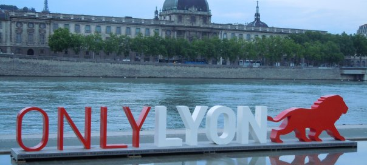
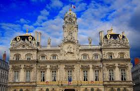
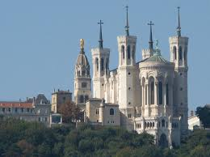
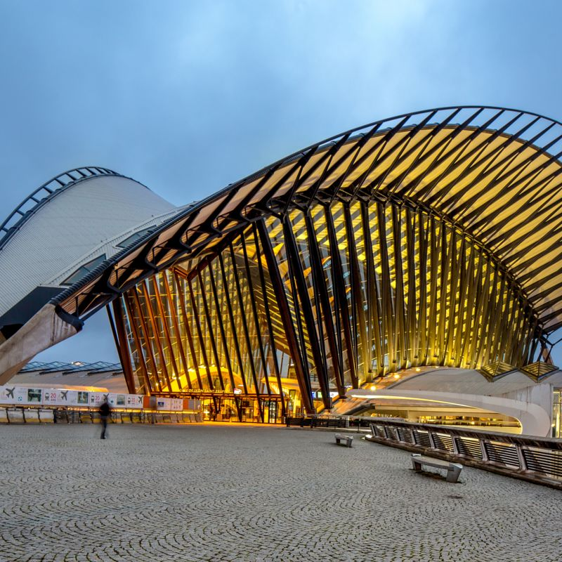

 Лио́н — город во Франции, административный центр региона Овернь — Рона — Альпы, особого административного образования Лионская метрополия и 14 кантонов. Также является временной префектурой для департамента Рона, из состава которой был выделен с 1 января 2015 года с образованием Лионской метрополии. Третий по численности населения город Франции. Согласно проведённым в 2015 году компанией PricewaterhouseCoopers исследованиям, Лион назван самым привлекательным для жизни городом Франции, обогнав Париж, Марсель и Тулузу.
| Страна | Франция |
| Регион | Овернь — Рона — Альпы |
| Департамент | Лионская метрополия |
| Координаты | 45°45′35″ с. ш. 4°50′32″ в. д.HGЯO |
| Внутреннее деление | 9 округов |
| Мэр | Жерар Коллон (Gérard Collomb) |
| Основан | 43 год до н. э. |
| Прежние названия | Лугдунум (лат. Lugdunum) |
| Площадь | 47,87 км² |
| Высоты | 162—305 м |
| Население | 506 615 человек (2014) |
| Плотность | 10 041 чел./км² |
| Агломерация | 1 748 271 |
| Названия жителей | Лионец, лионка |
| Часовой пояс | UTC+1, летом UTC+2 |
| Телефонный код | +33 4 |
| Почтовые индексы | 69001 — 69009 |
| Код INSEE | 69123 и 69381 — 69389 |
| Официальный сайт | lyon.fr |
Что посмотреть в Лионе за 1 день?
И вот, вы приехали в Лион, причем, всего на сутки. Что посмотреть? Куда пойти? Во-первых, в славном городе Лионе лучше провести не день, а два или три. Это довольно большой город с уймой достопримечательностей и замечательной кухней. Он стоит того, чтобы провести в нем пару дней. Но если вы здесь только на 24 часа, то вы не должн1ы пропустить три главные достопримечательности Лиона: базилику Фурвьер, Старый город и трабуле, а также обед в местном ресторанчике. Так же вы можете заказать экскурсию (link is external) по Лиону, посмотреть город и послушать интересные истории. Начните вашу прогулку с большой площади Белькур. Во-первых, это самая большая площадь Франции и чуть ли не всей Европы, во-вторых, от неё рукой подать до всех достопримечательностей Лиона, и в-третьих, тут находится Офис Туризма, где можно взять карту города.
Фурвьер и римские театры.
От площади Белькур двигайтесь вверх, к Фурвьер — это главная базилика Лиона, она видна почти с каждой точки площади. Для этого перейдите через реку Сону. Вы окажетесь в центре Старого города - сюда мы еще вернемся - а пока садитесь на фуникулер, который доставит вас прямо к Фурвьер. Белая базилика была построена в конце 19 века, и церквей подобных ей во Франции — всего две, в Марселе и Сакре Кёр в Париже. Если вам повезет, и в Лионе будет солнечно, а в Фурвьер закончится ремонт, то тогда вы сможете полюбоваться чудесными витражами и золотыми мозаиками. Даже если погода будет серой, Фурвьер поражает своей архитектурой снаружи и богатым интерьером внутри. И да, обязательно спуститесь в нижную часовню, полюбуйтесь на иконы и статуи Святых Дев со всего света и мозаику в честь Святого Иоанна. Если вы в Лионе не на сутки, а на пару дней, то рядом с базиликой Фурвьер находятся велоколепно сохранившиеся древне-римские амфитеатры. Рекомендуем также посетить Музей Римской Галлии. От музея вы можете спуститься к Старому городу пешком или воспользоваться фуникулером. Если же времени на римлян у вас нет, то возвращайтесь на фуникулере от станции Фурвьер вниз, до станции Сен-Жан.
Старый Город и трабули.
Сен-Жан - это кафедральный собор города Лиона, церковь с многовековой историей, находящаяся в центре Старого города. Собор Сен-Жан также очень интересен для любопытного путешественника, во-первых, своими витражами, а во-вторых восхитительными механическими часами, которые показывают время, дату, знак зодиака и фазу луны. Часы еще и поют, и показывают представления. прочем, Старый город, вообще, интересное место. Начнем с того, что весь этот квартал объявлен Всемирным Наследием ЮНЕСКО. Старый город почти не изменился со времен далекого Ренессанса XV-XVI веков. Здешние дома и мостовые помнят королей, графов и герцогов, а также обычных купцов и прочих простолюдинов. Говорят, именно купцам потребовалось строить трабуле - проходы между домами. Трабуле - это способ быстро перейти между двумя паралельными улицами, спасаясь ли от погони, или просто хорошенько скоротив дорогу. Со стороны вход в трабуль легко не заметить - он выглядит как обычная входная дверь в подъезд. Но потяните за ручку и рискните войти в темный проход - пара шагов, и вы увидите внутренний дворик или трабуль. Во многих из них в старые времени был общий - на несколько домов - колодец. Кроме того, многие трабули отличаются интересный архитектурой и украшениями. Некоторые дворики имеют выходы на две параллельные улицы, другие - это обычные тупики. Сейчас трабуле превратились в основную достопримечательность Лиона, посмотреть на которые приезжают многие туристы. На случай, если вы рискнете последовать нашему совету ("потяните за ручку" и т.д.): пожалуйста, учтите, что трабули - это внутренние дворики с отличной акустикой, а в домах вокруг трабулей живут обычные жители. Трабули, вообще, частная собственность, поэтому большинство из них закрыты для посещения, а в тех, которые открыты, туристов просят не шуметь.
Бушоны и лионская кухня.
Именно в старом городе расположены бушоны - это традиционные лионские ресторанчики, подающие традиционную лионские блюда. Вы. возможно, удивитесь, но знаменитая на весь мир лионская кухня берет свое начало от простых работяг, а не от аристократов. Дело в том, что Лион долгое время был европейским центром по шелкоткачеству. И пусть в лионские шелка одевались все европейские дворяне - его производство было довольно тяжелым физическим трудом для простых ткачей. Денег им не хватало, но кушать им нужно было хорошо. В итоге, появилась лионская кухня - простая, сытная, но очень вкусная. Почти все лионские блюда готовятся из суб-продуктов: свиные ножки, кровяная колбаса, лионские сосиски и знаменитый андуйет, это колбаски из потрохов. Текут слюнки? Не переживайте, это в переводе названия блюд не очень. А на вкус они очень и очень хороши. Кроме того, всегда есть кёнелль: нечто вроде нежного взбитого мусса из рыбы. Наконец, обязательно попробуйте Лионский салат. На десерт можно взять пирожное пралине или тарелку с местными сырами. Запить все можно бокалом молодого вина божоле, либо бокалом вина с берегов Роны. Да и виноградники из Бургундии тут тоже рядом. Да, и на будущее, во Франции часы обеда — с 11 30 до 2. В другое время — хорошие рестораны закрыты. Вечером, рестораны открываются к 7-ми часам.
Вечерняя прогула и где переночевать?
Прогулявшись, отведав местной кухни и выпив вина, у вас останется время чтобы завершить прогулку по Лиону. Снова переходите Сону и площадь Белькур и идите к берегам могучей Роны. Лион по праву гордится своей вечерней подсветкой, когда огни города отражаются в водах Роны. Прогуляйтесь по набережным, посмотрите на город. Если вы решили остаться еще хотябы на денек, то рекомендуем разместить в одном из отелей в Старом городе (link is external). Вздохните, если вам пора уже уезжать. А потом, обязательно возвращайтесь сюда снова - ведь за один день вы почти ничего не увидели в Лионе.
Фото:
  